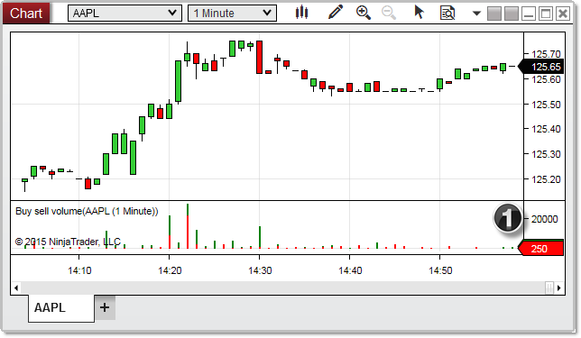
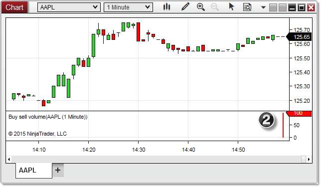
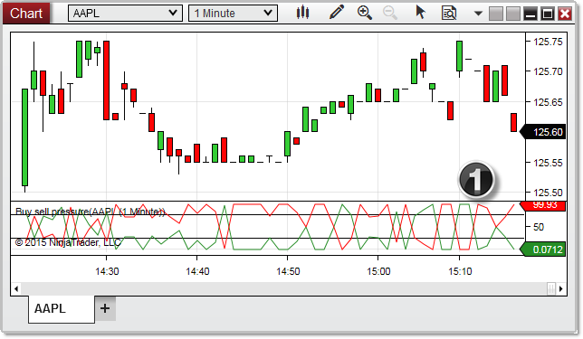
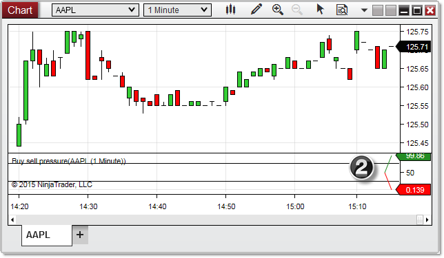
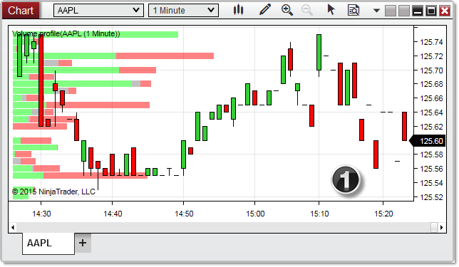
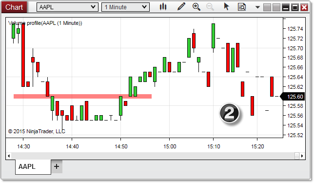

|
<< Click to Display Table of Contents >> Tick Replay Indicators |


|
Tick Replay Indicators
|
<< Click to Display Table of Contents >> Tick Replay Indicators |
|
NinjaTrader includes several real-time volume based indicators that are designed to function in real time only. However, Tick Replay allows these indicators to be used on historical data by simulating real-time price movements within historical bars.
Note: When Tick Replay is disabled, these indicators function only on real-time data, and therefore do not plot any values on historical data. If you change any property, interval, or instrument on a chart with Tick Replay disabled, these indicators will be reloaded and any accumulated real-time data plots will be lost. However, with Tick Replay enabled, they will plot historical data, although due to the way that Tick Replay processes data, the historical plots may not display precisely the same values as they would have if they had been running in real time. |
BuySellVolume IndicatorThe BuySellVolume indicator displays a horizontal histogram of volume categorized as Buy or Sell trades. Trades are categorized as a Buy when they occur at the Ask or above, and as a Sell when they occur at the Bid or below. Trades that occur between the Bid and Ask are ignored.

1) In the image above, the BuySellVolume indicator has just been applied with Tick Replay enabled, allowing it to display historical data.

2) In the image above, the BuySellVolume indicator has just been applied with Tick Replay disabled, limiting it to only displaying what has been calculated in real time. |
BuySellPressure IndicatorThe BuySellPressure indicator displays the current bar's buying and selling pressure as percentage values, and categorizes trades as either Buys or Sells. Trades are categorized as a Buy when they occur at the Ask or above, and as a Sell when they occur at the Bid or below. Trades that occur between the Bid and Ask are ignored.

1) In the image above, the BuySellPressure indicator has just been applied with Tick Replay enabled, allowing it to display historical data.

2) In the image above, the BuySellPressure indicator has just been applied with Tick Replay disabled, limiting it to only displaying what has been calculated in real time. |
Volume Profile IndicatorThe VolumeProfile indicator plots a real-time volume profile as a vertical histogram on a chart. Each bar represents the volume (number of trades) that accumulate at each bar from the time the indicator is started or re-started on the chart. Bars are color coded to represent the number of Buys (trades at the Ask or higher), Sells (trades at the Bid or lower) and neutrals (trades between the market). This indicator provides you with instant feedback to identify support and resistance levels and determine whether accumulation or distribution is taking place at those levels. A cyan colored diamond is automatically drawn at the starting bar of the VolumeProfile indicator.

1) In the image above, the VolumeProfile indicator has just been applied with Tick Replay enabled, allowing it to display historical data.

2) In the image above, the VolumeProfile indicator has just been applied with Tick Replay disabled, limiting it to only displaying what has been calculated in real time. |